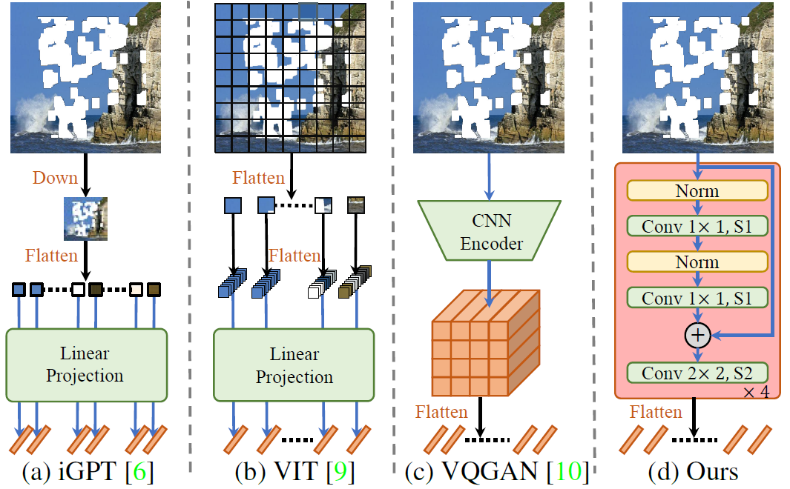

Abstract
Bridging distant context interactions is important for high quality image completion with large masks. Previous methods attempting this via deep or large receptive field (RF) convolutions cannot escape from the dominance of nearby interactions, which may be inferior. In this paper, we propose treating image completion as a directionless sequence-to-sequence prediction task, and deploy a transformer to directly capture long-range dependence in the encoder in a first phase. Crucially, we employ a restrictive CNN with small and non-overlapping RF for token representation, which allows the transformer to explicitly model the long-range context relations with equal importance in all layers, without implicitly confounding neighboring tokens when larger RFs are used. In a second phase, to improve appearance consistency between visible and generated regions, a novel attention-aware layer (AAL) is introduced to better exploit distantly related features and also avoid the insular effect of standard attention. Overall, extensive experiments demonstrate superior performance compared to state-of-the-art methods on several datasets.
Framework
- Transformer-based Image Completion Network
The masked image is first resized to a fixed low resolution (256*256) and fed into the transformer to generate semantically correct content. We then merge this inferred content with the original high resolution image and pass it to a refinement network with an Attention-Aware Layer (AAL) to transfer high-quality information from both visible and masked regions.
- Token Representation
|  |
(a) iGPT downsamples the image to a fixed scale, and embeds each pixel to a token. (b) VIT divides an image to a set of fixed patches and embeds each patch to a token. (c) VQGAN employs a traditional CNN to encode an image to the feature domains and then quantizes each feature as a token through a learned codebook. (d) Ours TFill also encodes an image to the feature domains, yet with a restrictive CNN. To do this, we ensure each token represents only the visible information in a small RF, leaving the long-range dependencies to be explicitly modeled by the transformer encoder in every layer, without cross-contamination from implicit correlation due to larger CNN RF |
More Results
- Results for Center Mask. All images are degraded by center mask. Our model is able to complete both object shape and background scene.
- Results for Face Editing. All results are reported at 512*512 resolution. For each pair, the left one is the input image and the right one is the edited output.
- Results for Nature Image Editing. Here, we mainly show object removal in traditional image inpainting tasks.